Liceo B-10 Minero América de Calama
Aula Impulsa 4.0 para el Liceo B-10 Minero América de Calama: diseñada y recorrida en 3D, habilitada en terreno e inaugurada en junio de 2026.

Un Aula Impulsa para el Liceo B-10 Minero América, en Calama. Impulsa 4.0 es un programa de Fundación Chile que financian Antofagasta Minerals, BHP, Codelco, Novandino Litio y SQM, y que busca acercar a estudiantes y docentes a cuatro tecnologías de la industria 4.0: robótica, realidad virtual y aumentada, programación y prototipado. Ideo Maker ejecutó el proyecto completo, desde el diseño hasta la capacitación de los docentes, en paralelo con el aula del Liceo José Miguel Quiroz de Taltal.
Mi rol
- Diseño del espacio y modelo 3D en Unreal Engine
- Presupuestos, carta Gantt y logística
- Habilitación en terreno: armado e instalación del mobiliario
- Capacitación docente en las cuatro tecnologías
Equipo Ideo Maker
- Sebastián Higuera
- Patricia Ramírez
- Vicente Cáceres
- Nelson Mora
- Javiera Matus
- Diego López
- Elvis Andrade
- Lesly Maldonado
El espacio
La sala está en el primer piso del liceo, junto a un área de uso común, y mide cerca de 7,7 por 6 metros. Antes de diseñar se levantó el plano con la superficie de la sala, la vía de evacuación y las fuentes de ventilación, y con eso se distribuyeron las zonas de trabajo alrededor de un centro de mesas colaborativas.
{kind=link}
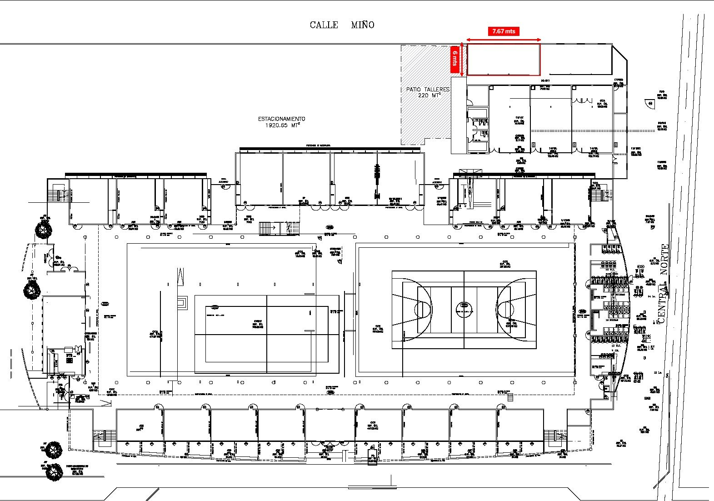
{kind=link}
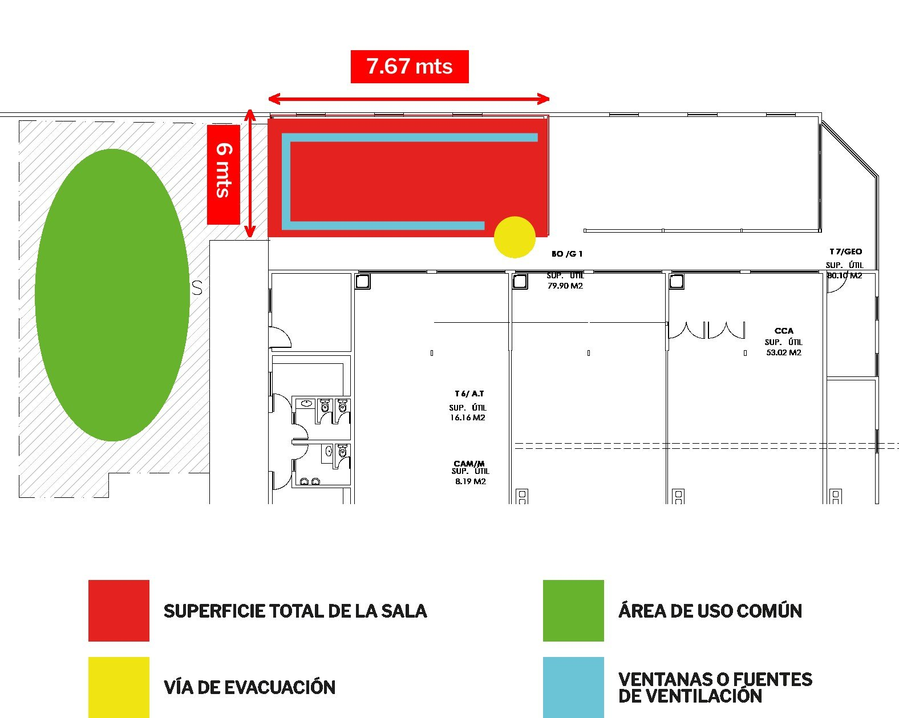
{kind=link}
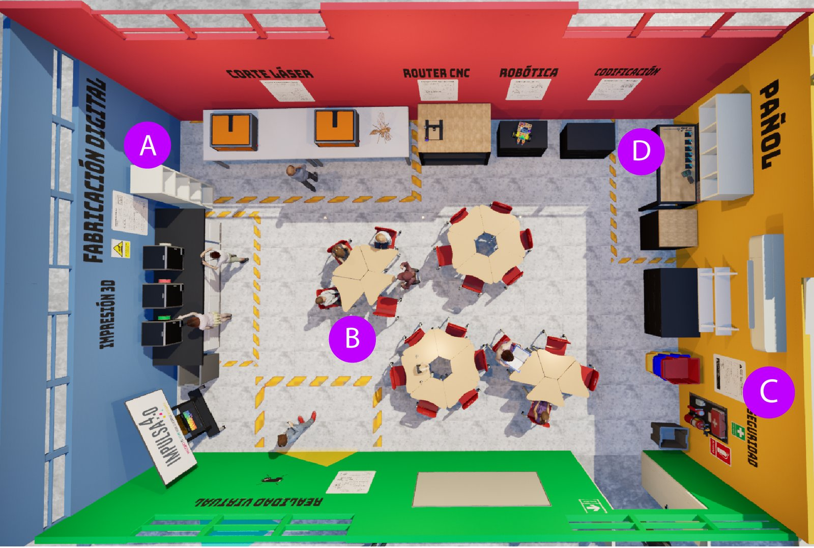
{kind=link}
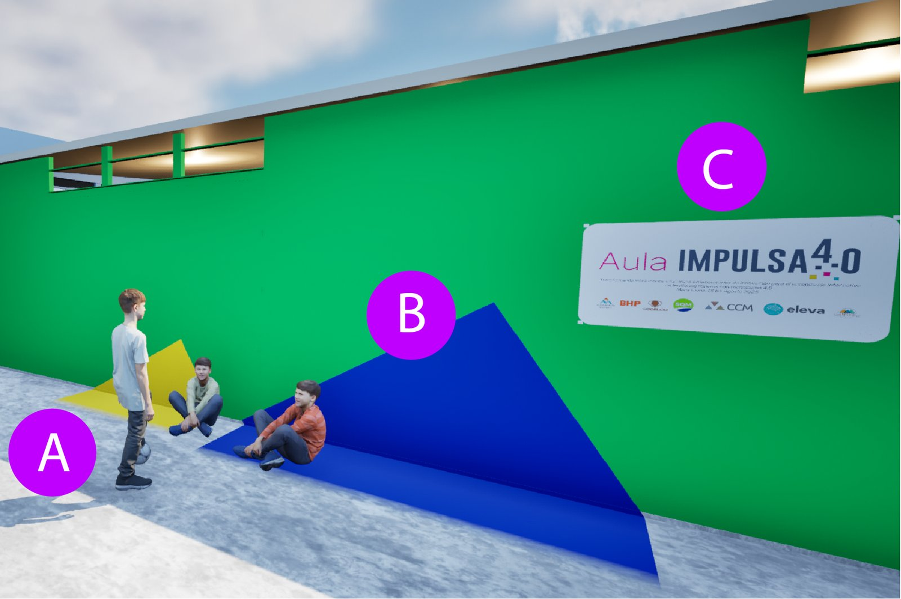
{kind=link}
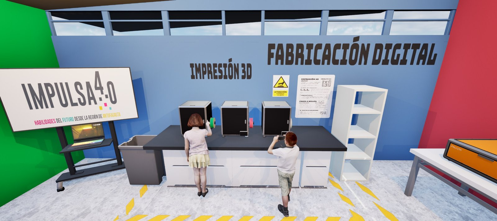
{kind=link}
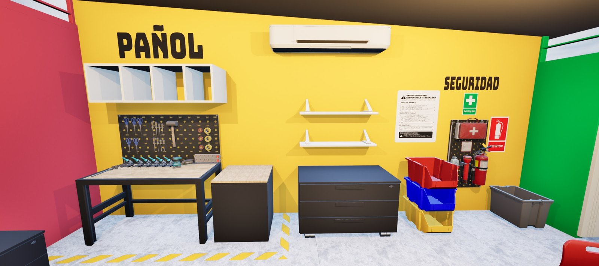
{kind=link}
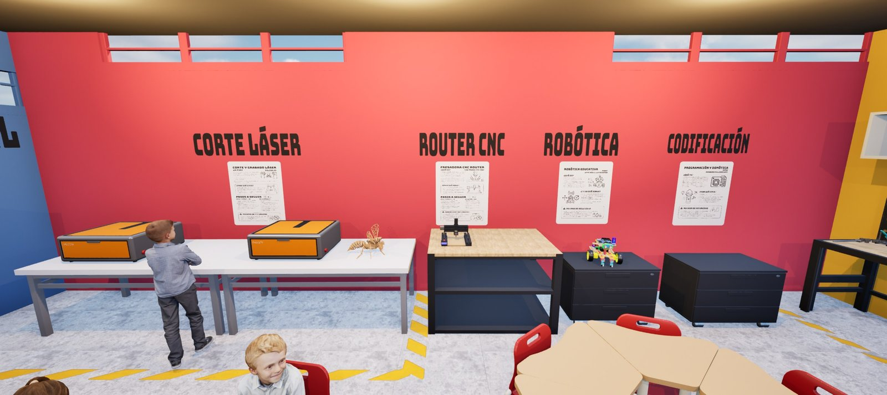
{kind=link}
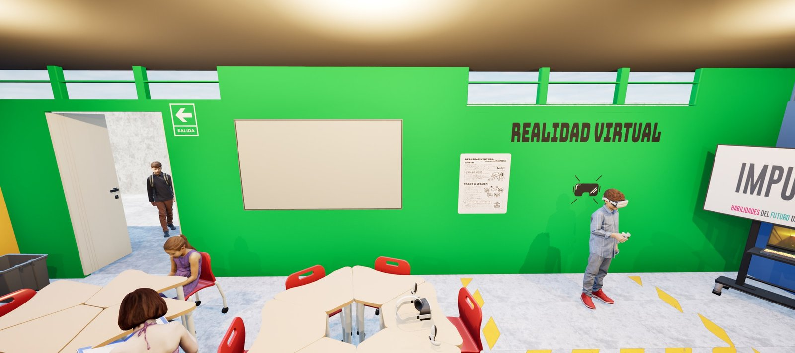
El aula en uso
El día de la inauguración, estudiantes y docentes ya estaban usando cada zona del aula.
{kind=link}
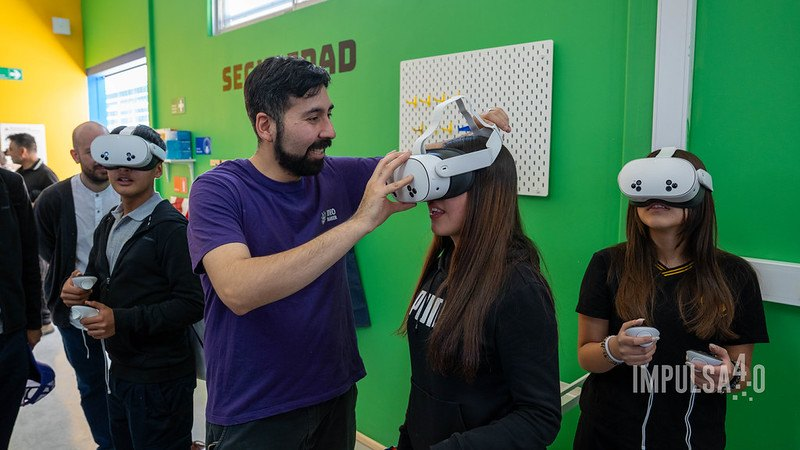
{kind=link}
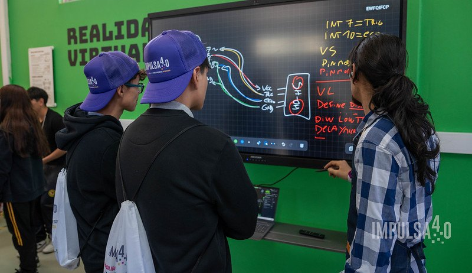
{kind=link}
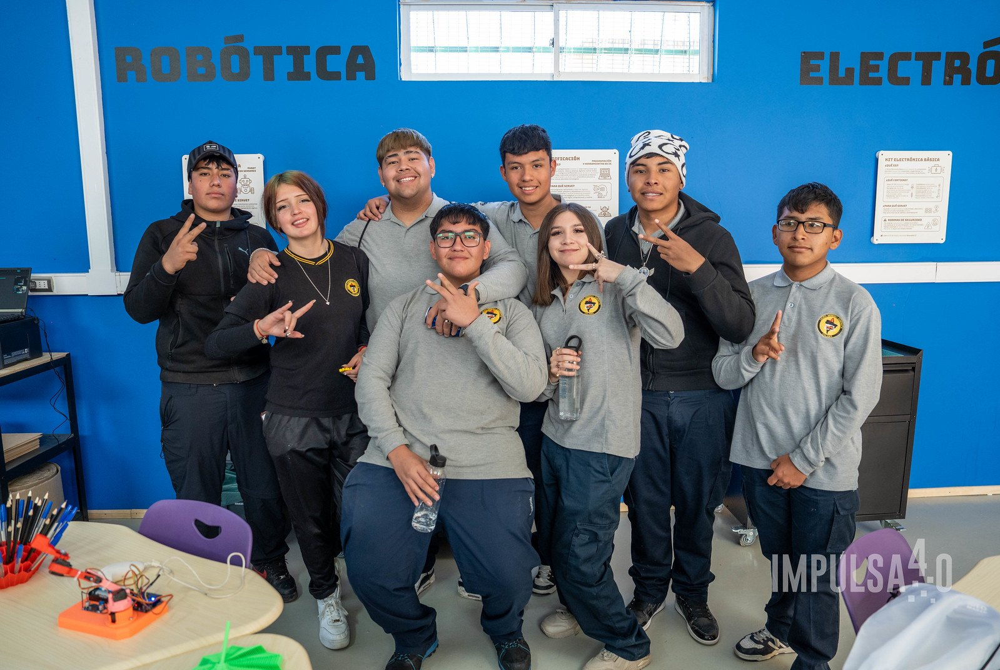
{kind=link}
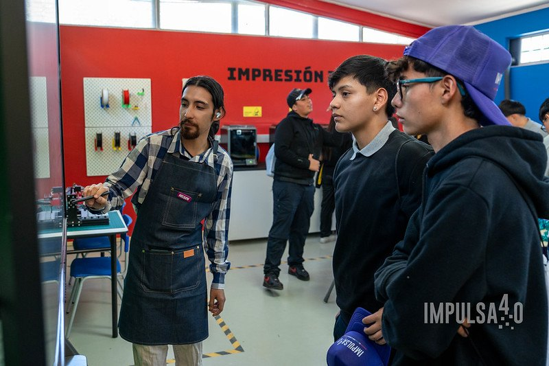
La inauguración
El aula se inauguró a comienzos de junio de 2026, junto con la del Liceo José Miguel Quiroz de Taltal. Se diseñó en un proceso de co-diseño con la comunidad del liceo y se suma a la red de aulas que ya funcionan en Likan Antai y María Elena.
{kind=link}
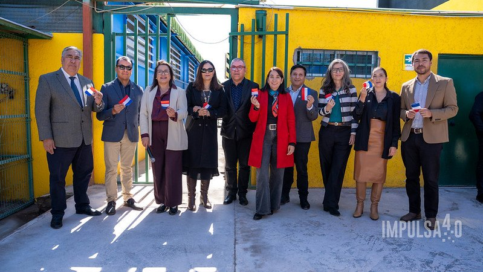
{kind=link}
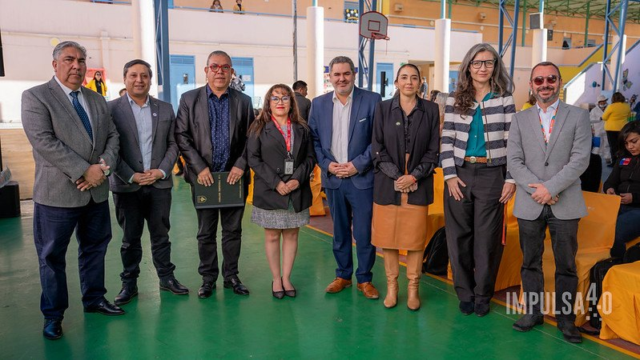
{kind=link}
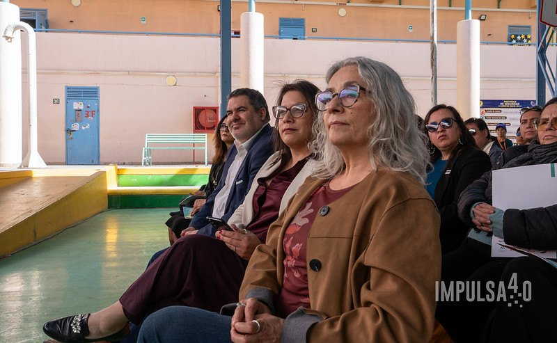
{kind=link}
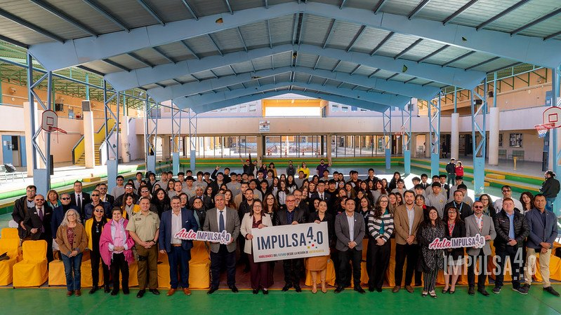
{kind=link}
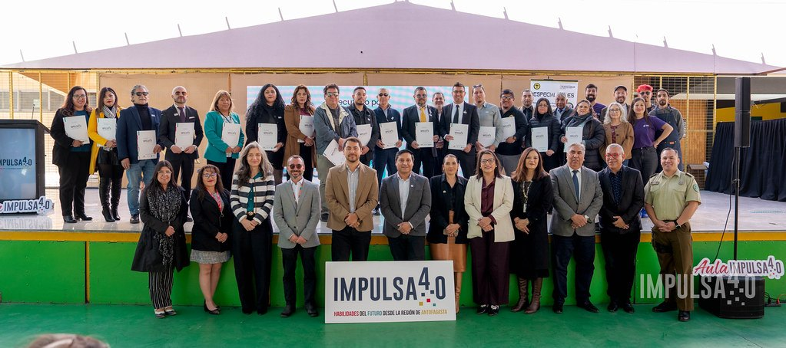